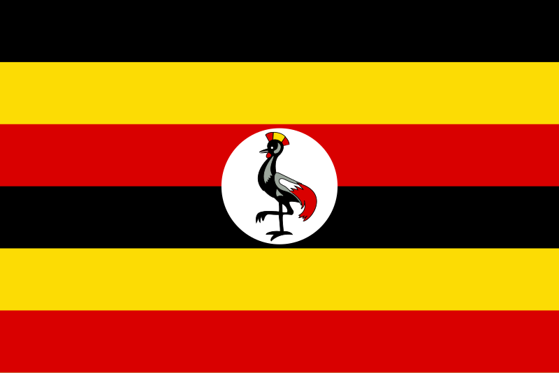

About Me
Hello! My name is Aron Mutekulwa and I am a software development student at BYU-Idaho. I am passionate about technology, problem-solving, and learning new skills. I enjoy working on projects, collaborating with others, and finding innovative solutions to challenges.
Kampala,Uganda
Uganda is a landlocked country in East Africa, known as the "Pearl of Africa" for its natural beauty, wildlife, and diverse culture. Its capital city is Kampala, and it borders Kenya, Tanzania, Rwanda, South Sudan, and the Democratic Republic of Congo. Uganda is home to Lake Victoria and the source of the Nile River.